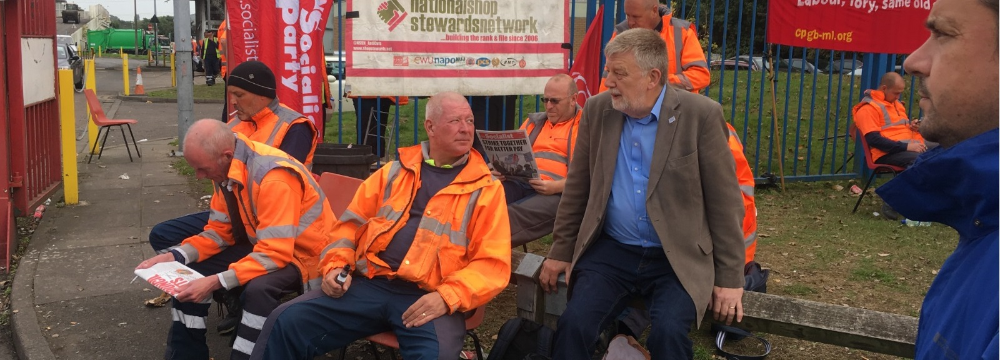

Trade Unionists Support Dave Nellist
a Socialist for Birmingham Erdington
We, the undersigned trade union members, declare our support for Dave Nellist in the Birmingham Erdington by-election.
A former Labour MP for Coventry South East for nine years, Dave is standing as a Trade Unionist and Socialist Coalition candidate.
Dave was a workers’ MP who only took a worker’s wage and gave away over half the MP’s salary to trade unionists and working class campaigners fighting to defend their livelihoods and communities. He was parliamentary spokesperson of the All-Britain Anti Poll Tax Federation and was expelled from Labour for refusing to pay the poll tax.
Dave was then a socialist Coventry City councillor for 14 years. While Labour started privatising and cutting services, Dave refused to vote for cuts and supported workers struggling to defend their jobs and services – including the Birmingham bin workers and care workers in their disputes with the Labour council.
The contrast this with Keir Starmer’s Labour, opposed to taxing the rich and public ownership, even of the big energy companies as prices go through the roof. Labour’s Erdington candidate was a council cabinet member during the Birmingham bin and care worker strikes.
We call for the widest support for Dave Nellist’s socialist stand, for a fighting voice for working class people.
Signatories to this petition, in a personal capacity, include:
POA Deputy General Secretary Joe Simpson; Usdaw President 2018-2021 Amy Murphy; RMT NEC members: Dave Goard, Mary-Jane Herbison, Dale Kember, Joe Kirby, Paul McDonnell, Kevin Morrison, Jared Wood; NEU NEC members: Shelia Caffrey, Nicky Downes, Sean McCauley, Steve Scott, Louise Thompson; Unison NEC members: April Ashley, Naomi Byron, Jim McFarlane, Hugo Pierre; BFAWU NEC member Dumitru Manole; Napo NEC member Adam Harmsworth; NUJ NEC member Anton McCabe; PCS BEIS Group President Marion Lloyd; PCS Group Executive members: Dave Bartlett, Craig Worswick; Unison Service Group Executive members: Steve Bell, Helen Couchman, Mark Evans, John Malcolm, Adrian O’Malley, Angie Waller.
Are you a trade unionist who supports Dave?
Register your details here and download a pdf version to collect other trade unionists' signatures here.